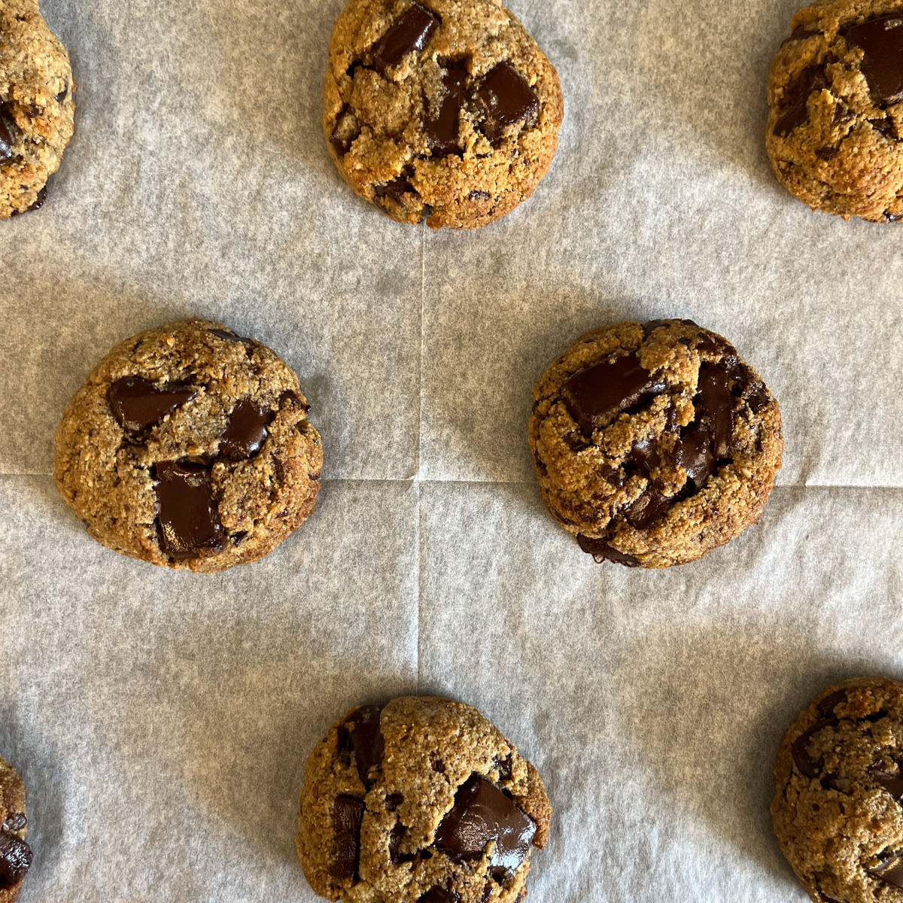
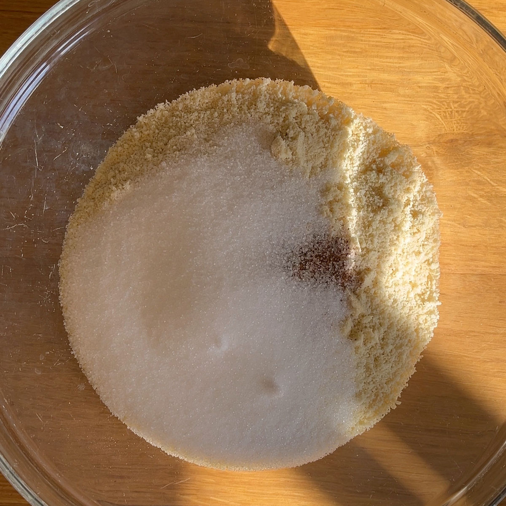
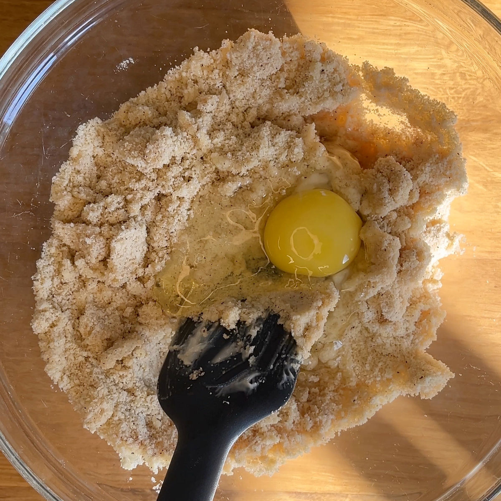
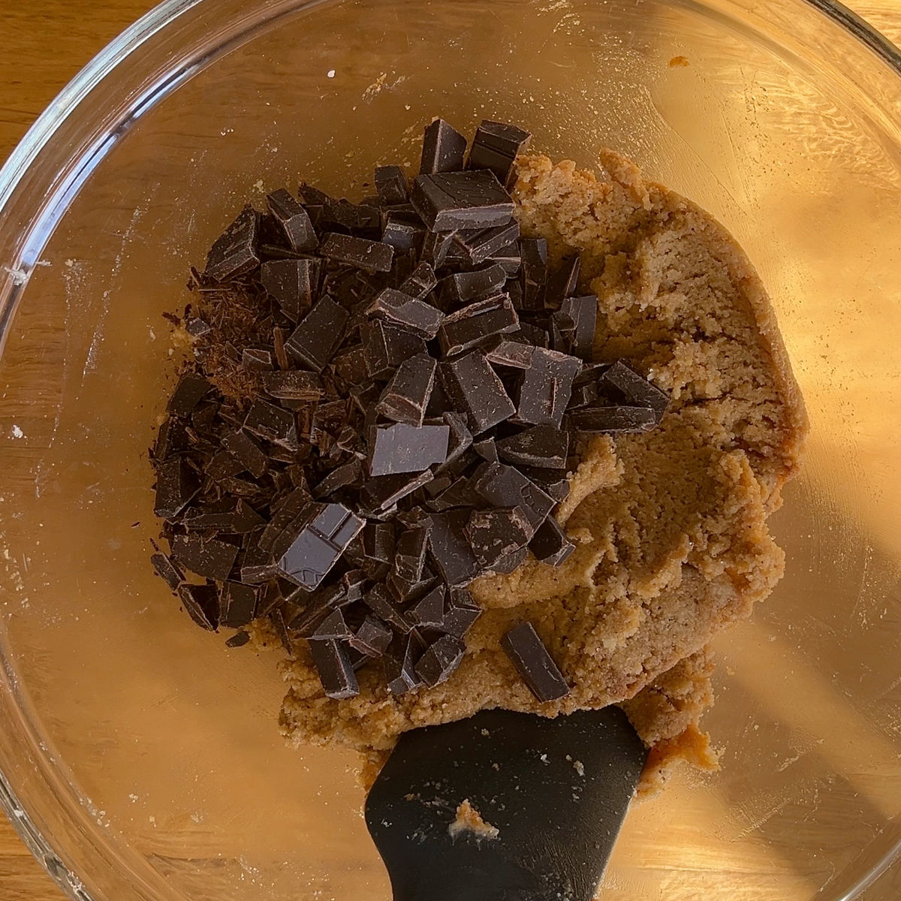
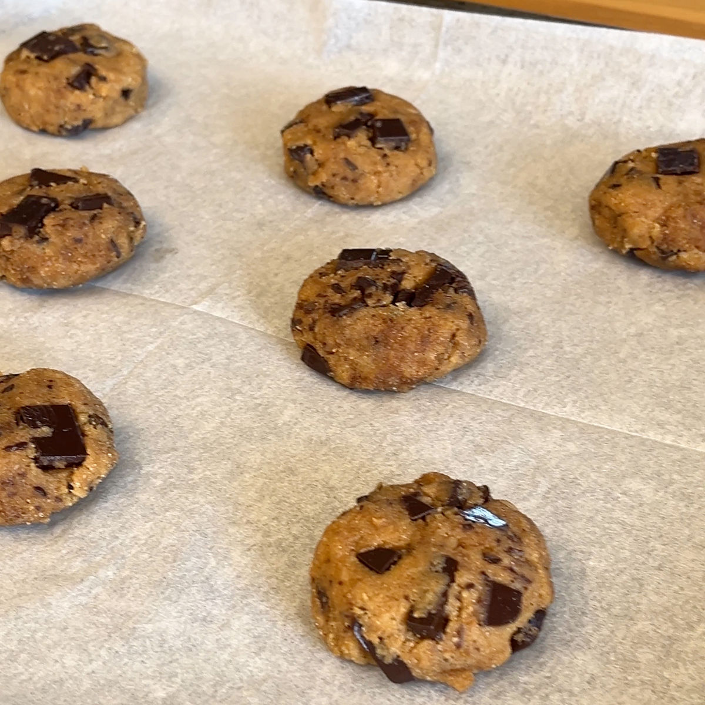

עוגיות שוקולד קפה רכות
טבלת ערכים תזונתיים בקירוב :
שימו לב שהערכים משתנים כתלות בממתיק, טבלה זו היא עבור מתכון עם סוויטאנגו חמאה ושוקולד 90%. בנוסף, שימו לב לכמות הפחמימות בקמח השקדים אני משתמשת באחד עם 9.1 גרם פחמימה עבור 100 גרם.
| ערכים | עוגיה (43 גרם) | 100 גרם |
|---|---|---|
| קלוריות | 203 | 472 |
| פחמימות | 3.3 | 7.7 |
| חלבונים | 5 | 11.8 |
זה המתכון האהוב עלי! העוגיות האלו יוצאות רכות וממכרות עם תווים עדינים של קפה שוקולד וקינמון. הן מושלמות לקיטוגנים, סכרתיים ולאנשים שפשוט רוצים עוגיות קצת יותר בריאות טבעיות ולא מעובדות. מתאימות בול לצד הקפה של הבוקר.
ההמלצה האישית שלי היא להשתמש במתכון הזה בגרסאת הסוויטאנגו כיוון שטעם הדבש בעוגיות יוצא חזק למדי ומשטלת על טעם הקפה.

מתכון:
כמות : 12 -10 עוגיות גדולות
מרכיבים:
00 גרם קמח שקדים/ 225 גרם במידה ומשתמשים בדבש כממתיק
1/4 (רבע) כפית סודה לשתייה
1/2 (חצי) כפית אבקת אפייה
קוורט מלח
1/2 (חצי) כפית קינמון
75 גרם סוויטאנגו / 80 גרם אלולוז / 77 גרם דבש (שימו לב: דבש אינו מתאים לסוכרתיים ולקיטוגנים)
60 גרם חמאה רכה מאוד / 50 גרם שמן קוקוס רך
1 ביצה L
4 כפיות קפה מגורען (כמו Jacobs) עם 2 כפיות מים רותחים
100 גרם שוקולד 90% קצוץ (או כל שוקולד אחר שאתם מעדיפים)
הוראות הכנה:
חממו תנור ל170 מעלות (אני עובדת על מצב טורבו אך לא חובה).
קחו כוסית קטנה ושפכו פנימה את ארבעת כפיות הקפה וערבבו עם שתי כפיות המים הרותחים.
ערבבו בנפרד את הקמח שקדים עם המלח, הסודה לשתייה, אבקת האפייה, הקינמון והממתיק (אם ההמתיק הוא דבש אז הוסיפו אותו לאחר ערבוב היבשים).
הוסיפו את החמאה לקערה ומעכו אותה עם ההיבשים עד שנוצרים גושי בצק.
הוסיפו את הביצה וערבבו.
לאחר קירור הקפה הוסיפו גם אותו לקערה וערבבו.
הוסיפו את השוקולד הקצוץ וצרו כדורים בגודל של בערך כף וחצי, אפשר להרטיב את הידיים קלות כדי שהבלילה לא תדבק (במידה והבלילה אינה יציבה מספיק אפשר לקרר אותה 15-10 דקות במקרר או להוסיף כמה כפות קמח שקדים), אמורים לצאת באזור ה12 כדורים.
מקמו את הכדורים על מגש עם נייר אפיה ומעכו אותם קלות באמצעות היד. הכניסו את העוגיות לתנור ותציאו לאחר כ10 דקות או עד שהקצוות של העוגיות זהובים מעט (ניתן לראות התמונה).
סרטון מתהליך ההכנה:
לינק לסרטון קצר
תמונות מתהליך ההכנה:

חומרים יבשים

הוספת ביצה לבלילה

הוספת שוקולד מריר קצוץ

עוגיות לפני אפייה